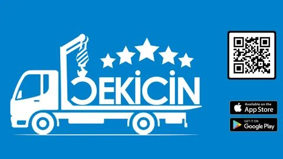
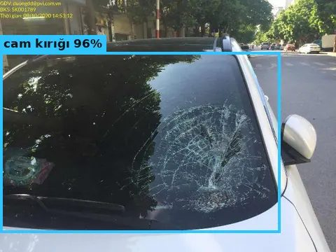
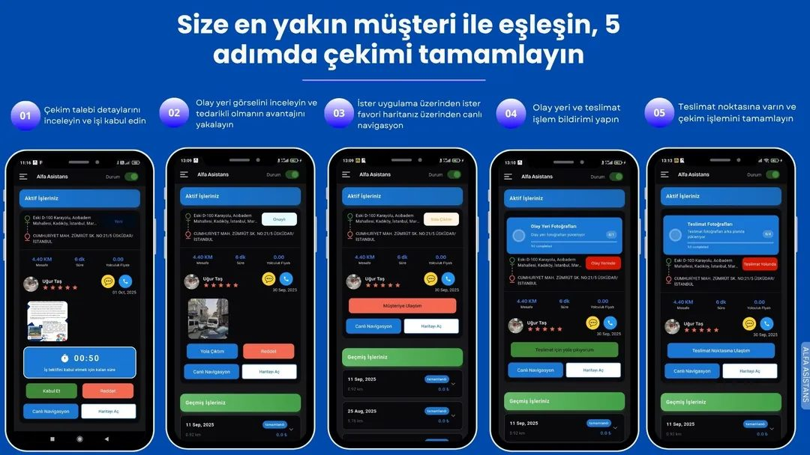

Ortaklık ve Ortak Geliştirme (Joint Venture) Programı
Çekicin uygulamasının yapay zekâ modüllerini birlikte geliştirecek şirket ve araştırma ortakları arıyoruz.
DEMO · Yeni bölüm · Henüz imzalı ortak yok
🎬 Sesli tanıtım videosu · 3:11
PDF sayfaları (dokunun → PDF açılır)
Neden ortaklık?
6 yapay zekâ modülü demo olarak çalışıyor; ortalama ilerleme %58. Kalan işin çoğu gerçek veri, saha testi ve entegrasyon gerektiriyor — bunlar ortaklarla daha hızlı ve daha doğru yapılır.


🤝 5 ortaklık modeli
🔬 1. Ar-Ge / araştırma ortaklığı
Kim: Üniversite laboratuvarları, kamu araştırma merkezleri, teknokent Ar-Ge firmaları
Nasıl: Ortak: yöntem, bağımsız test, makale/tez · Çekicin: gerçek problem, KVKK onaylı veri, saha
TÜBİTAK 1505 · 1711🤝 2. Ortak geliştirme / Joint Venture
Kim: Bu projenin geliştirme kısmını birlikte yürütecek yazılım / yapay zekâ şirketleri ve araştırma-danışmanlık şirketleri (Türkiye, İsveç / AB)
Nasıl: Sözleşmeli ortak proje veya ayrı proje şirketi; fikri mülkiyet, gelir payı ve roller sözleşmede belirlenir
TÜBİTAK 1501 / 1507🔌 3. Teknoloji / entegrasyon ortaklığı
Kim: Sigorta, ekspertiz, filo / kiralama ve yedek parça platformları
Nasıl: Modülleri API ile kendi sistemlerinde kullanır; lisans veya kullanım başına ücret
API 1.11📸 4. Veri ortaklığı
Kim: Hasar fotoğrafı, onarım faturası, parça fiyatı verisi olan kuruluşlar
Nasıl: Yalnızca KVKK açık rızalı veri; karşılığında ortak doğrulama raporu ve daha doğru model
KVKK🌍 5. Dağıtım / bölge ortaklığı
Kim: Çekici ağları, servis zincirleri, başka ülkelerdeki yol yardım firmaları
Nasıl: Bölgesel kullanım ve uyarlama (dil, fiyat, adres verisi)
M5 · 20/20🔬 Ar-Ge destek yolları (Türkiye, 2026)
Üniversite yürütücü, şirket müşteri kuruluş. KOBİ için %75 destek; 2026 TÜBİTAK katkı üst sınırı 2,3 milyon TL; en fazla 24 ay.
Kaynak ↗Müşteri kuruluş + en az bir KOBİ teknoloji sağlayıcı + en az bir üniversite laboratuvarı. En fazla 10 milyon TL, 24 ay. 2026 çağrısı 2 Ekim’de kapandı → hedef: sonraki çağrı.
Kaynak ↗Şirketin kendi Ar-Ge projesi; %75 hibe. 1507 (KOBİ başlangıç): 3,5 milyon TL bütçe sınırı, en fazla 18 ay.
Kaynak ↗Yapay zekâ ve yazılım girişimlerine teknik altyapı, mentorluk ve yatırım ağı.
Kaynak ↗Rakamlar 2026 duyurularından alınmıştır; başvurudan önce güncel çağrı metni kontrol edilmelidir. Destek kararı TÜBİTAK’a aittir.
🇸🇪 Uluslararası yol: İsveç araştırma ve danışmanlık ortağı
Aranan ortak tipi: İsveç’te kurulu küçük bir araştırma ve danışmanlık şirketi (AB – aktiebolag). Kanıt sentezi ve araştırma tasarımı, sorumlu (insan denetimli) yapay zekâ, iklim ve sağlık etkisi ve bilimsel raporlama alanlarında çalışan şirketler.
Ortağın katkısı
- M6 Çevresel etki modülü (%30): yöntem tasarımı ve gerçek veriyle doğrulama — en büyük açık
- AI Sorumlu yapay zekâ: insan denetimi, AB Yapay Zekâ Yasası ve GDPR/KVKK hazırlık incelemesi, model kartları
- M1–M2 Kanıt sentezi: literatür ve kıyaslama, doğruluk ölçümünün bağımsız değerlendirmesi
- EU Bilimsel iletişim: Eurostars / Horizon başvurusu, İngilizce rapor ve makale
KOBİ liderliğinde uluslararası Ar-Ge projesi; en az 2 ülke, en fazla 36 ay. İsveç (Vinnova): KOBİ maliyetin %50’sine, araştırma kuruluşu %70’ine kadar; İsveç tarafına en fazla 5 milyon SEK (İsveçli KOBİ yoksa 2 milyon SEK). Türkiye (TÜBİTAK 1709 çağrısı / 1509): KOBİ %75’e, büyük şirket %60’a, üniversite %100’e kadar. 2026 çağrıları kapandı (19 Mart, 10 Eylül) → hedef: 2027’deki sonraki çağrı.
Kaynak ↗İsveçli başvuranlar için: şirketin net satışı veya özkaynağı talep edilen tutarın en az yarısı olmalı.
Kaynak ↗Türkiye 2021’den beri ortak ülke; 3 ülkeden en az 3 ortaklı işbirliği projeleri. İsveçli KOBİ’ler EUSME Support’tan ücretsiz başvuru danışmanlığı alabilir.
Kaynak ↗Sonraki adımlar
- İsveç’te uygun araştırma-danışmanlık ortağıyla tanışma + NDA
- M6 çevresel etki için ortak pilot planı (yöntem + veri)
- Konsorsiyum sözleşmesi taslağı (IP, roller, gelir payı)
- Bir sonraki Eurostars çağrısına ortak başvuru (TÜBİTAK + Vinnova)
🤝 Joint venture yapıları
📑 Sözleşmeli konsorsiyum
Ortaklar ayrı şirket olarak kalır; konsorsiyum sözleşmesi IP, roller ve gelir payını belirler. Eurostars / Horizon projeleri için standart yol.
🏢 Ortak proje şirketi (equity JV)
Ürünleşme aşamasında ayrı bir şirket kurulur; paylar katkıya göre belirlenir.
🔑 Lisans + gelir payı
Araştırma ortağı yöntem ve doğrulama sağlar; ürün Çekicin’de kalır; gelir payı veya lisans ücreti.
Yapı seçimi ve sözleşme metni için hukuk ve vergi danışmanlığı alınmalıdır.
🎯 Her modül için aranan ortak
| 📷 1. Hasar tespiti | %70 | Sigorta / ekspertiz: etiketli gerçek hasar fotoğrafları |
| 🧮 2. Onarım kararı ve maliyet | %55 | Servisler: gerçek onarım faturaları |
| 🔩 3. Parça tedarikçileri ve fiyat | %60 | Parça satıcıları: stok ve fiyat API’si |
| 🎙 4. Sesli yönlendirme | %55 | Çağrı merkezi / ses firması: Türkçe konuşma testi |
| 📍 5. Yakın yer arama | %80 | Çekici ve servis ağları: doğrulanmış adresler |
| 🌱 6. Bekleme süresi ve çevresel etki | %30 | Üniversite: gerçek veriyle doğrulama çalışması |
🪜 Süreç: 5 adım
- Tanışma görüşmesi + gizlilik sözleşmesi (NDA)
- Ortak hedef, veri ve rol planı (1–2 hafta)
- Pilot: 1 modül, gerçek veriyle ölçüm (4–8 hafta)
- Sözleşme: ortak geliştirme / lisans / destek başvurusu
- Ölçüm raporu ve yeni sürüm (admin panelinde)
✅ Bugün hazır olanlar
✉ İletişim
Ortak olmak veya görüşme ayarlamak için: info@cekicin.com.tr · Telegram: @Cekicin_bot
DEMO — modüller henüz Çekicin mobil uygulamasının içinde değildir. Doğruluk oranları testlerden gelir, Çekicin’in kendi verisinden değil.
Partnership & Joint-Venture Programme
We are looking for companies and research partners to co-develop the AI modules of the Çekicin app.
DEMO · New section · No signed partner yet
🎬 Narrated video · 3:15
PDF pages (tap → opens the PDF)
Why partners?
Six AI modules already work as a demo; average progress is 58%. Most of the remaining work needs real data, field tests and integration — this is faster and more accurate with partners.
🤝 5 partnership models
🔬 1. R&D / research partnership
Who: University labs, public research centres, technopark R&D firms
How: Partner: method, independent testing, papers/theses · Çekicin: real problem, KVKK-consented data, field access
TÜBİTAK 1505 · 1711🤝 2. Co-development / Joint venture
Who: Software / AI companies and research & advisory companies (Türkiye, Sweden / EU) that run the development part of this project with us
How: Contract-based joint project or a separate project company; IP, revenue share and roles are set in the contract
TÜBİTAK 1501 / 1507🔌 3. Technology / integration partnership
Who: Insurers, vehicle assessors, fleet / rental companies, spare-part platforms
How: Use the modules in their own systems via API; licence or pay-per-use
API 1.11📸 4. Data partnership
Who: Organisations with damage photos, repair invoices or part-price data
How: KVKK explicit-consent data only; in return a joint validation report and a more accurate model
KVKK🌍 5. Distribution / regional partnership
Who: Tow networks, repair-shop chains, roadside-assistance firms in other countries
How: Regional use and adaptation (language, prices, address data)
M5 · 20/20🔬 R&D funding routes (Türkiye, 2026)
University = executing body, company = customer. 75% support for SMEs; 2026 TÜBİTAK contribution cap 2.3 million TL; up to 24 months.
Source ↗Customer company + at least one SME technology provider + at least one university lab. Up to 10 million TL, 24 months. The 2026 call closed on 2 October → target: the next call.
Source ↗The company’s own R&D project; 75% grant. 1507 (SME start-up): 3.5 million TL budget cap, up to 18 months.
Source ↗Technical infrastructure, mentoring and an investor network for AI and software ventures.
Source ↗Figures are from 2026 announcements; check the current call text before applying. Funding decisions are made by TÜBİTAK.
🇸🇪 International route: a Swedish research & advisory partner
Partner type wanted: a small research & advisory company registered in Sweden (AB – aktiebolag), working on evidence synthesis and research design, responsible (human-reviewed) AI, climate and health impact, and scientific communication.
What the partner brings
- M6 Environmental-impact module (30%): method design and validation with real data — the biggest gap
- AI Responsible AI: human oversight, EU AI Act and GDPR/KVKK readiness review, model cards
- M1–M2 Evidence synthesis: literature and benchmarks, independent review of accuracy measurements
- EU Scientific communication: Eurostars / Horizon proposals, English reports and papers
SME-led international R&D project; at least 2 countries, up to 36 months. Sweden (Vinnova): SMEs up to 50% of costs, research organisations up to 70%; at most SEK 5 million for the Swedish side (SEK 2 million if no Swedish SME). Türkiye (TÜBİTAK 1709 call / 1509): SMEs up to 75%, large companies 60%, universities up to 100%. The 2026 calls have closed (19 March, 10 September) → target: the next call in 2027.
Source ↗For Swedish applicants: the company’s net sales or equity must be at least half of the requested amount.
Source ↗Türkiye has been an associated country since 2021; collaborative projects need at least 3 partners from 3 countries. Swedish SMEs can get free proposal advice from EUSME Support.
Source ↗Next steps
- Intro + NDA with a suitable Swedish research & advisory partner
- Joint pilot plan for M6 environmental impact (method + data)
- Draft consortium agreement (IP, roles, revenue share)
- Joint application to the next Eurostars call (TÜBİTAK + Vinnova)
🤝 Joint-venture structures
📑 Contractual consortium
Partners stay separate companies; a consortium agreement sets IP, roles and revenue share. The standard route for Eurostars / Horizon projects.
🏢 Joint project company (equity JV)
A separate company is set up at the product stage; shares follow each partner’s contribution.
🔑 Licence + revenue share
The research partner provides method and validation; the product stays with Çekicin; revenue share or licence fee.
Legal and tax advice is needed to choose the structure and draft the contract.
🎯 Partner wanted for each module
| 📷 1. Damage detection | 70% | Insurers / assessors: labelled real damage photos |
| 🧮 2. Repair decision & cost | 55% | Repair shops: real repair invoices |
| 🔩 3. Part suppliers & prices | 60% | Part sellers: stock & price API |
| 🎙 4. Voice guidance | 55% | Call centre / speech firm: Turkish speech tests |
| 📍 5. Nearby-place search | 80% | Tow & repair networks: verified addresses |
| 🌱 6. Waiting time & environmental impact | 30% | University: validation study with real data |
🪜 Process: 5 steps
- Intro call + non-disclosure agreement (NDA)
- Joint goals, data and roles plan (1–2 weeks)
- Pilot: 1 module, measured on real data (4–8 weeks)
- Contract: co-development / licence / funding application
- Measurement report and new release (in the admin panel)
✅ What is ready today
✉ Contact
To become a partner or book a call: info@cekicin.com.tr · Telegram: @Cekicin_bot
DEMO — the modules are not inside the Çekicin mobile app yet. Accuracy figures come from tests, not from Çekicin’s own data.